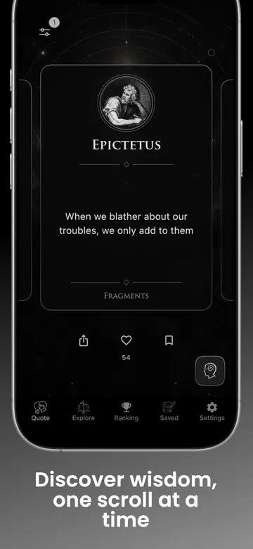

Use one daily philosophy quote in four moves: read the source, restate the idea in your own words, connect it to one real situation, and save it only if you can name why it matters.
What daily philosophy quotes are actually for
A short quotation cannot replace an argument, a complete book, or a conversation. It can do something different: interrupt a familiar reaction. The best daily philosophy quotes act like compact prompts. They place a claim about courage, justice, attention, desire, or responsibility in front of you at the exact moment when your own assumptions feel obvious.
That is why context matters. “Focus on what is in your control” is not simply a productivity slogan. In Stoic philosophy, it belongs to a larger account of judgment, character, and what makes a life good. A sentence from Plato is often one voice inside a dialogue, not necessarily Plato delivering a final rule. Knowing the thinker, work, and school keeps inspiration from becoming misquotation.
A useful daily practice therefore has two layers: the quick encounter and the path back to depth. You should be able to absorb the idea in under a minute, then see its source and explore further when it deserves more attention.
A four-step daily quote ritual
1. Read more slowly than the screen expects
Read the sentence once for meaning and once for emphasis. Which word carries the claim? What distinction is being made? If the quote sounds instantly agreeable, ask what it would rule out. Ten attentive seconds are more valuable than collecting ten quotations.
2. Restate the idea without its famous name
Put the thought into plain language. If you cannot explain it without repeating the quote, you probably have not interpreted it yet. A Marcus Aurelius passage about judgment might become: “The event and my assessment of the event are not the same thing.” That restatement gives you something you can test.
3. Attach it to one situation
Choose a decision, meeting, habit, or relationship from the day ahead. Ask what would look different if you took the idea seriously. Keep the experiment small: wait before replying, ask one clarifying question, distinguish a fact from an assumption, or give complete attention to a task for five minutes.
4. Save selectively
Do not turn favorites into another unread archive. Save a quote when you can add a mental label such as “before difficult conversations,” “when plans change,” or “for choosing what deserves attention.” A small personal library with a purpose is better than a large list you never revisit.

How to choose reliable quote sources
Famous quotations are frequently shortened, modernized, or assigned to the wrong person. A trustworthy quote collection should identify the author and, wherever possible, the work. Treat a quotation with no source as a lead to investigate, not as settled evidence.
Translations also differ. Ancient Greek and Latin do not map perfectly onto modern English, and translators make legitimate choices about tone and terminology. If wording seems unusually contemporary, compare it with a complete translation. The point is not to become suspicious of every sentence; it is to remember that a translated quote is an interpretation as well as a text.
For deeper reading, use complete public texts and scholarly introductions. OpenStax's reviewed Introduction to Philosophy offers a broad map of the discipline. Project Gutenberg provides complete public-domain translations of works such as Marcus Aurelius's Meditations. These sources help you move from a striking line to the argument or practice around it.
How to build the habit with Philosophia
Choose a daily notification time you can keep, add a widget where you naturally pause, and create collections named for situations rather than philosophers alone.
Start in the Quote tab and give one idea your attention. Tap through to the thinker or source when you want context. Use Explore to compare the school behind the quote with another tradition. For example, place a Stoic view of control beside a Buddhist account of attachment or an Aristotelian account of habit.
Widgets make the practice ambient. Instead of relying on motivation to open an app, the idea is already present on your Home or Lock Screen. Notifications work best when they mark a natural transition—after waking, before work, or at the start of an evening review—rather than arriving at a random busy moment.
When a quote survives the day's test, bookmark it or add it to a custom collection. Useful collection names include “Attention,” “Hard conversations,” “Courage,” and “Things I can control.” Over time, the Saved tab becomes a practical map of the questions you repeatedly face.
A simple seven-day starting plan
- Day 1: Read one quote twice and restate it in one sentence.
- Day 2: Check the author and source work before interpreting it.
- Day 3: Apply the idea to one small action before noon.
- Day 4: Compare the quote with a different philosopher or school.
- Day 5: Save one idea and give the collection a practical name.
- Day 6: Revisit the saved quote and ask whether experience changed your reading.
- Day 7: Keep the ritual that felt natural; remove any step that became performative.
The aim is not a streak for its own sake. It is a repeatable encounter between an old idea and a present choice. When a daily quote produces that encounter, even briefly, it has done real philosophical work.